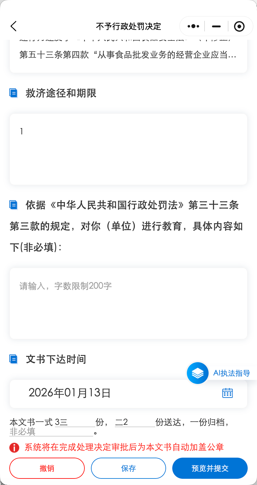

260113需求
针对PC+移动进行修改
（海口市）救济途径和期限：限制1000字以内
默认取上次填写本类文书的信息；若未填写过，默认显示如下内容：
你（单位）如不服本行政处罚决定，可以在收到本不予行政处罚决定书之日起XX日内向XXXX人民政府申请复议；也可以在XX日内依法向XXXX人民法院提起行政诉讼。申请行政复议或者提起行政诉讼期间，行政处罚不停止执行。
（湖南省+长沙市）救济途径和期限：限制1000字以内
默认取上次填写本类文书的信息；若未填写过，默认显示如下内容：
如对本不予行政处罚决定不服，可在收到本不予行政处罚决
定书之日起XX日内向XXXX人民政府申请行政复议；也可以在XX日内依法向XXXX人民法院提起行政诉讼。
260304海口执法——发改委公示对接
移动+PC
当前案件有完成电子签章的决定书/不予处罚决定书后
1、对应办理页不再显示对应的文书入口
2、补录文书的时候，决定阶段也不显示对应的文书入口
3、对已经有完成电子签章审批的文书，再在文书录入页面提交决定书时layer提示“该案件已存在有效决定书，请撤销该决定书！”